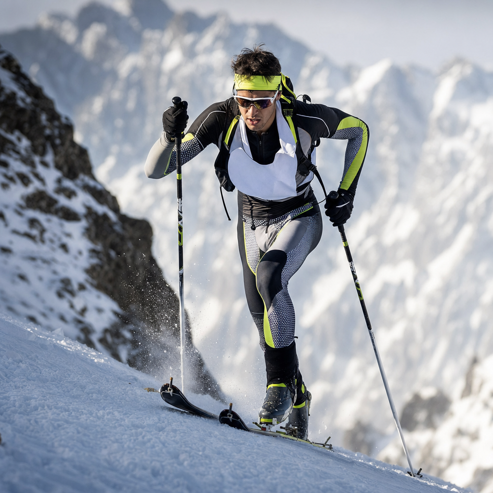
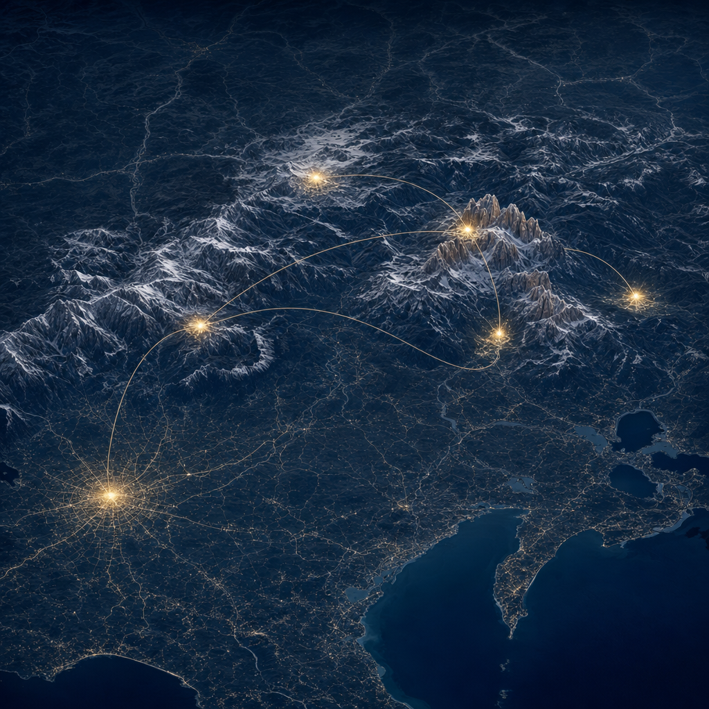
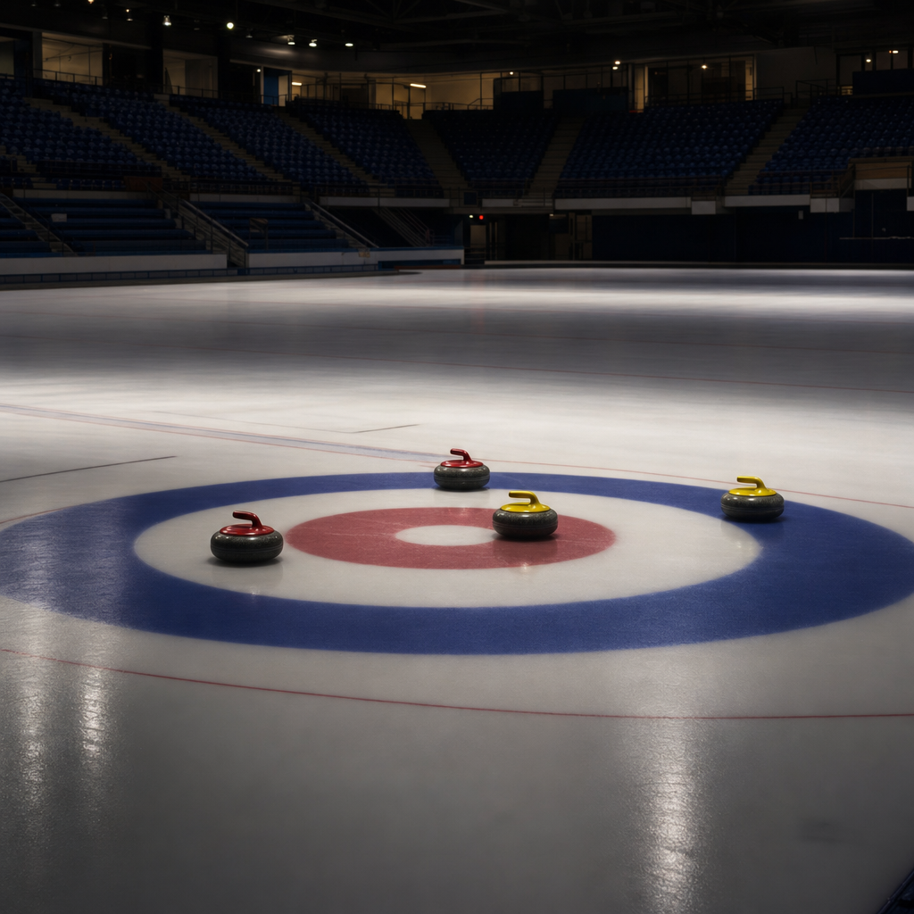

How Milano Cortina 2026 Was Built — Hour by Hour, Mountain by Mountain
The 2026 Winter Olympics scheduled 1,866 sessions across six valleys and 19 days. Reading that schedule row by row reveals which gold medals had the thinnest fields, which valleys carried the medal weight, and how the IOC engineered prime time twice — once for Italian dinner, once for American afternoon TV.
1,866 sessions, six valleys, 19 days
Between 4 February and 22 February 2026, Milano Cortina ran 1,866 separate scheduled sessions. The slowest day (closing Sunday) had 30. The busiest (Friday Feb 13) had 138 — a session starting roughly every six minutes from sunrise to midnight.
Those sessions were spread across six geographic clusters that span more than 22,000 square kilometres of northern Italy. Cortina d'Ampezzo carried the most sessions (757), Milan came second (399), and a single biathlon arena 150 km north of Cortina, Anterselva, ran 33 sessions — every one of them a medal event.
The schedule is a document of attention engineering. To read it row by row is to watch the IOC build a 19-day theatre out of 13 venues, six valleys, and one debut sport.
Where the gold was easier to win
If you measure how thin the field was for each gold, speed skating offered the highest medals-per-nation ratio of any sport at 1.68 — 14 medal events split across just 25 NOCs that own 400-metre indoor ovals. Freestyle skiing was next at 1.29, short track at 1.23, and snowboard at 1.10.
The new ski mountaineering events sat in the middle of the table at 0.69. Only 13 nations qualified plus one Individual Neutral Athlete, but they competed for nine medal sessions across three events — a relatively concentrated podium for the sport's Olympic debut.
Alpine skiing, by contrast, was the hardest gold by this measure. Eighty NOCs sent skiers to fight for 30 medal sessions — 0.375 medals per nation, the same density as figure skating's 40-nation field competing for just 15 finals.
Before you read on, guess: Of these six sports, which one had the most medals available per qualifying nation?

The schedule's two clocks
Two clocks run inside the schedule. The 14:00 local hour is the busiest single slot of the entire Games at 305 sessions, and the 19:00 hour is a near-twin at 289. But medal events follow a different rhythm: 13:00 holds the most medal sessions (57), and a clean evening peak emerges at 20:00 (39 medal sessions).
These two peaks are not accidents. A 13:00 Italian start is 07:00 ET — perfect for NBC's morning Olympic window. A 20:00 Italian start is 14:00 ET — exactly the afternoon prime slot NBC paid $7.75 billion to fill. No medal event begins before 10:00 local time, and only six begin after 22:00.
Aggregated by weekday, Saturday delivers the most medal events (57) and Sunday is third (55). Friday closes the working week with 52 medals — a deliberate distribution that aligned with the record-setting 23.5-million-viewer NBC primetime average.
Where each medal lives
Each medal event has a home valley. Milan's four ice arenas hosted 88 of the 344 medal sessions — speed skating, short track, figure skating, and the four hockey golds. Livigno's two snow parks were freestyle and snowboard country: 35 and 33 medal sessions respectively. Val di Fiemme split its 62 medal sessions across cross-country skiing, ski jumping, and Nordic combined.
Cortina d'Ampezzo, the most-sessions cluster, was actually the lowest-medal-density cluster at 7.3% — the curling stadium's 436 round-robin sessions diluted everything else. The sliding centre, alpine downhill course, and curling finals together produced just 55 medal sessions.
The cleanest single-discipline node is Anterselva. Thirty-three sessions, 33 of them biathlon medal events. Bormio runs second-cleanest: 53 sessions, 24 medal events (45.3% density), split between men's alpine and the new ski mountaineering races.

Curling vs. short track: the schedule's longest and shortest sessions
Curling consumes 23.4% of the entire program — 436 sessions over 19 days, an average of 23 curling matches per calendar day. The reason is structural: round-robin pool play across mixed doubles, men's, and women's tournaments means every team plays every other team across many days. By contrast, ski mountaineering's 21 sessions are 1.2% of the program.
Session length amplifies this. Curling matches average 160 minutes (median three hours flat). Ice hockey games average 150 minutes. Figure skating short programs run 143 minutes. At the other extreme, short-track speed skating heats average just 12.6 minutes — 13 times shorter than a curling match. Ski mountaineering averages 19.3 minutes per session, fitting the sport's sprint-only Olympic format.
The contrast tells a viewing story: a curling fan can plan a half-day; a short-track fan blinks and the heat is over.

The back-loaded medal calendar
The Games' second half holds 62.2% of all medal events. The first nine days (Feb 4-12) generate 130 medal sessions across 836 events, a 15.6% medal density. The second ten days (Feb 13-22) generate 214 medal sessions — 20.8% density.
The final two days are the densest. Saturday Feb 21 ran 56 sessions of which 20 were medal events (35.7% density). Sunday Feb 22 ran just 30 sessions, but 14 were medals — a closing-day medal density of 47%. The Sunday card included the men's hockey final, the men's 50km cross-country mass start, the four curling finals, and ski mountaineering's mixed relay.
130 medal of 836
214 medal of 1030
What the schedule admits
Only six of the 16 disciplines log any training sessions in the public schedule, and they are exactly the high-speed gravity sports plus alpine. Luge sessions are 64.2% training, bobsleigh 61.0%, skeleton 57.1%. The other ten sports report zero training — not because they don't train, but because their training never reaches the public IOC schedule.
Five sessions in the entire dataset carry an "estimated_start" flag — every single one in luge, where weather windows on the iced track make exact start times provisional.
Together these are the schedule's small admissions: that an Olympic Games is not 1,866 equal events, but a layered document about which sports are public, which gold medals are concentrated, and which valleys carry the weight of two weeks of attention.
References
- Data source: Milano Cortina 2026 Olympic Schedule by Daniel Chen (Posit PBC, UBC). 1,866 sessions × 21 columns. CC0.
- Medal table & participation: Wikipedia — 2026 Winter Olympics · Final medal table · Ski mountaineering qualification
- Geographic spread: Travel between Olympic venues
- Viewership benchmarks: Axios — Milan Cortina averaged 23.5M viewers · Front Office Sports — NBC viewership
- Tools: Vega-Lite 5.x, vanilla JavaScript, custom SVG.